PokéSurvivor 異色寶可夢取得指南
異色 寶可夢是配色不同、較為稀有的個體。遊戲收錄的 966 隻寶可夢中，絕大多數都有對應的異色圖像。
取得方式
- 野外遭遇： 每隻生成的野生寶可夢都有 1／4096 的基礎機率成為異色。出現時會有閃光與提示；擊敗後即可加入收藏。
- 抽卡取得： 每次抽卡都有 3／100 的基礎異色判定機率。
- 抽卡不會重複取得已擁有的異色；若同稀有度的異色已收集齊全，結果會改為一般個體。
- 取得夥伴的異色版本後，可在收藏中選用該外觀進行冒險。
一般與異色

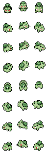
妙蛙種子
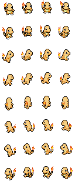
小火龍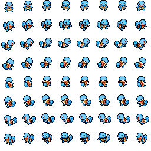
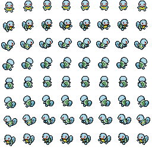
傑尼龜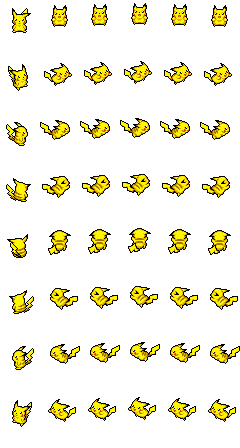
 皮卡丘
皮卡丘
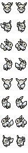
伊布
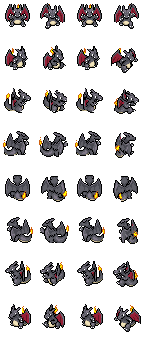
噴火龍
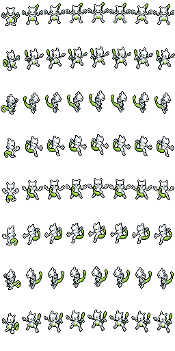
超夢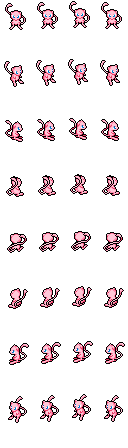
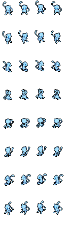
夢幻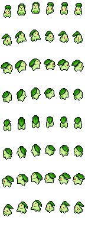
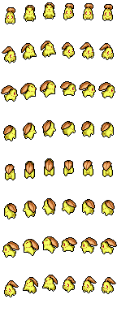
菊草葉
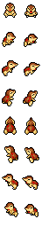
火球鼠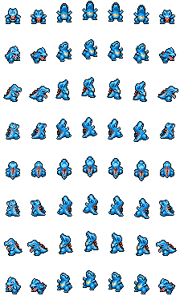
 小鋸鱷
小鋸鱷
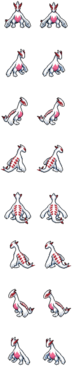
洛奇亞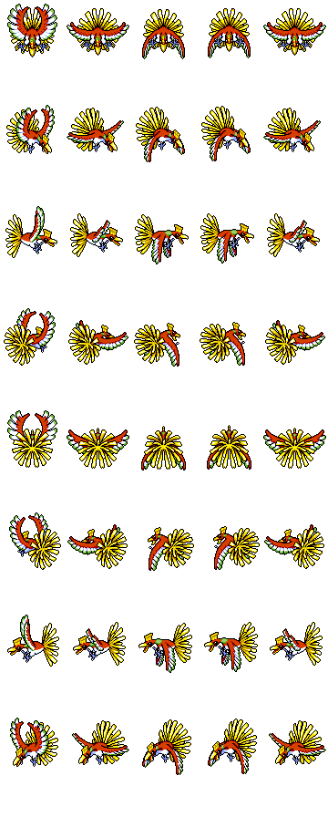
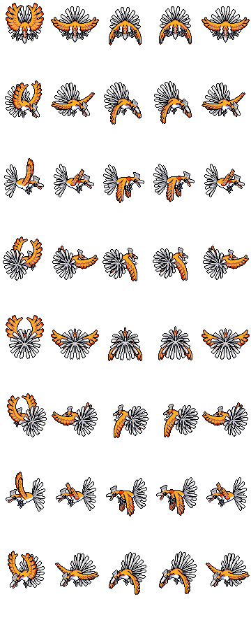
鳳王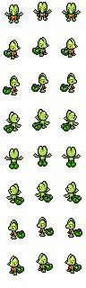
 木守宮
木守宮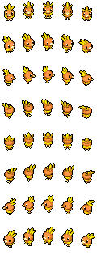
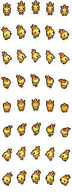
火稚雞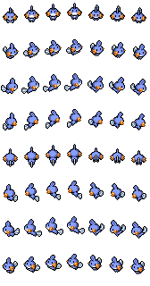
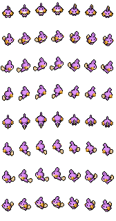
水躍魚
 烈空坐
烈空坐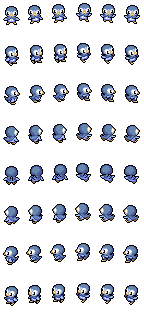
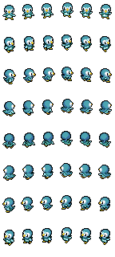
波加曼
 路卡利歐
路卡利歐
 烈咬陸鯊
烈咬陸鯊
 藤藤蛇
藤藤蛇
 甲賀忍蛙
甲賀忍蛙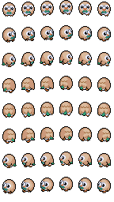
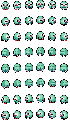
木木梟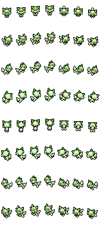
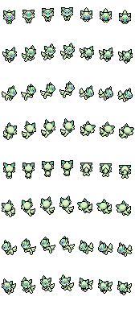
新葉喵